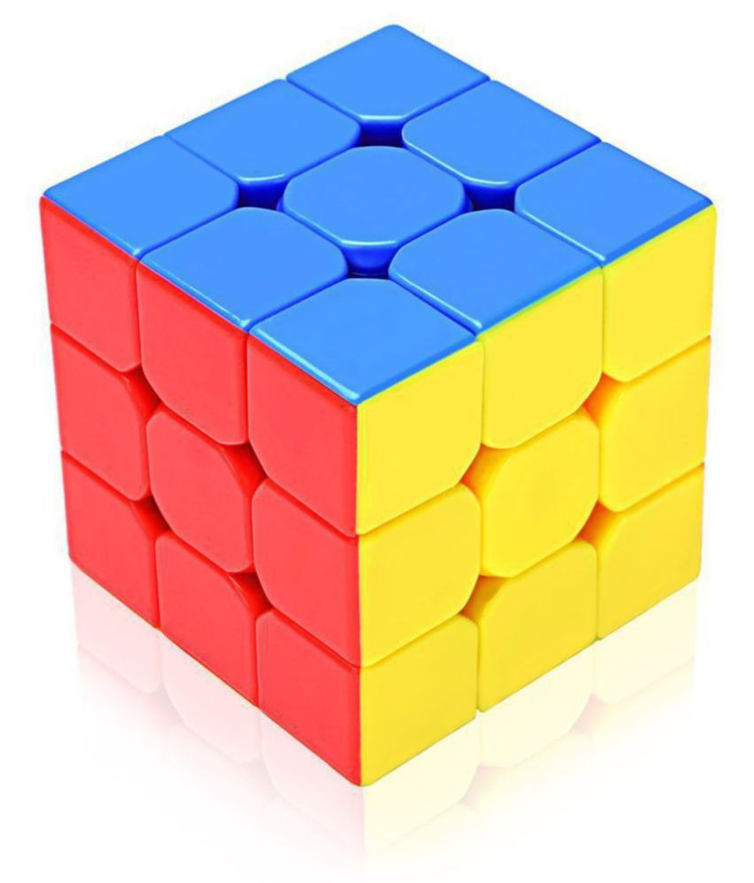

My Hobby
is the Rubik's Cube

What is the Rubik's Cube?
The Rubik's Cube is a 3-D combination puzzle invented in 1974 by Hungarian sculptor and professor of architecture Ernő Rubik. Originally called the Magic Cube, the puzzle was licensed by Rubik to be sold by Ideal Toy Corp. in 1980 via businessman Tibor Laczi and Seven Towns founder Tom Kremer.Rubik's Cube won the 1980 German Game of the Year special award for Best Puzzle. As of January 2009, 350 million cubes had been sold worldwide, making it the world's top-selling puzzle game. It is widely considered to be the world's best-selling toy.
My Records
Anyway, more about me(lol). Some records I have are...
3 by 3: "19.368"
2 by 2: "7.364"
4 by 4: "2:24.268"
5 by 5: "7:19.344"
Pym: "12.289"